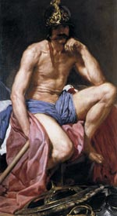

Арес, в давньогрецькій міфології бог війни. На відміну від Афіни Паллади - богині чесної і справедливої війни, Арес, відрізняючись віроломством і хитрістю, вважав за краще війну підступну, війну заради самої війни. У творах Гомера можна зустріти ототожнення Ареса з війною і смертоносною зброєю. Негрецькі ім'я бога свідчить про його фракийском походження.
Супутниці Ареса - богиня розбрату Еріда і кровожерна Еніо. Його коні, діти однієї з іриній і Борея, носили імена Полум'я, Шум, Жах, Блиск. Атрибутами бога вважалися собаки, палаючий факел і, звичайно ж, спис.
Народження Ареса сталося без участі батька від дотику Гери до чарівного квітки. У більш пізніх міфах Арес виступав як син Зевса, який називав його найбільш ненависним з усіх богів і стверджував, що якби не було Арес його рідним сином, він би давно відправив його в Тартар, туди, де знаходяться нащадки Урана.
В античній літературі можна зустріти згадки про те, що Арес одружився з найкрасивішою з богинь - Афродітою, іноді навіть називаються діти, які були народжені від цього шлюбу: Ерот (або Ерос), Антерос (ненависть), Гармонія, Фобос (страх ), Деймос (жах). "Завдяки" своїм негативним якостям Арес з великими труднощами утвердився серед інших олімпійських богів, тому в його образі виразно простежуються сліди нашарування різних епох. У римській міфології йому відповідає Марс.